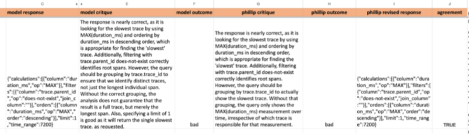

作者： Eugene Yan, Bryan Bischof, Charles Frye, Hamel Husain, Jason Liu & Shreya Shankar
翻译：ian
原作发布日期：May 28, 2024
第三次校译稿说明
此文是经验丰富的大语言模型的实践者们毫无保留的分享，具有极高的参考价值。
第一稿译文经 Deepseek V2 翻译，但是大量专业术语翻译有误，语叙不畅，阅读困难。此后，译者于空闲时间逐段阅读，并校正了大部分译文，尽量做到能够让读者在不需要对照原文的情况下，也能较为顺畅地以中文阅读本文。
在第二次校译中，我将原标题做了意译，显得更符合中文的意境表达，也更准确地传达了本文的内容方向。翻译中依然存在一些术语或词汇先后不一致的问题，部分情况下使用了中文，部分情况下使用了英文原词，对于有一定经验的开发者来讲，应该能够加以区分。
在第三次校译过程中，译者又发现了大量翻译不恰当之处以及明显的错误。不过，部分译句因英语习惯与中文习惯的不同而略显生涩，且依然可能存在一些排版错误，如有更正，欢迎评论留言。
译者计划将继续翻译此系列文章的续篇，敬请关注。
阅读建议
这篇文章内容很长，仔细阅读需要花费较长时间。部分段中文字还添加了交叉链接至外部资料。对于有一定经验的开发者，建议浏览标题，快速定位至感兴趣的段落阅读。如果有时间，则可以从头开始细读。原文链接也附在译文末尾，以方便读者参照。
特别感谢
出于知识产权考虑，译者向作者发送了邮件，请求翻译本文并发布于本人的公众号或个人博客，用于与朋友之间的交流与学习。译者几乎立即就得到了多位原作者们的同意，对于作者们无私的分享，在此表示衷心地感谢！
2024年9月8日
译者：ian
(以下为译文)
现在是利用大型语言模型（LLMs）构建应用的激动人心时刻。过去一年里，LLMs已经"足够好"，可用于实际应用。LLMs的快速进步，加上社交媒体上的一系列演示，预计将推动2025年对AI的2000亿美元投资。LLMs的广泛可用性使得不仅是机器学习专家，每个人都能将智能融入产品中。尽管构建AI产品的门槛已降低，但创建超越演示的有效产品仍是一项具有挑战性的任务。
我们发现了一些关键但常被忽视的、源于机器学习的见解和方法，这些对基于LLMs开发产品至关重要。掌握这些概念可以让你在不需要ML专业知识的情况下，在这个领域获得竞争优势！过去一年，我们六人一直在LLMs基础上构建实际应用。我们意识到有必要将这些经验教训汇总，以造福整个社区。
我们来自不同背景，担任各异角色，但都亲身体验了使用这项新技术的挑战。我们中有两位独立顾问，他们帮助众多客户将LLM项目从概念变为成功产品，见证了决定成败的关键因素。一位是研究ML/AI团队工作方式及如何改进工作流的研究员；两位是应用AI团队的领导者：一位在科技巨头公司，另一位在初创公司；还有一位曾教授数千人深度学习，现致力于简化AI工具和基础设施的使用。尽管经历各异，我们都对所学到的教训中的共同主题感到惊讶，更令人意外的是这些见解尚未得到广泛讨论。
我们的目标是将此指南打造成围绕LLMs构建成功产品的实用手册，融合我们的亲身经历并借鉴业内范例。过去一年里，我们通过实践积累了宝贵的经验教训，往往来之不易。尽管我们无意代表整个行业发声，但我们诚挚地分享这些关于利用LLMs开发产品的见解和建议。
本文分为战术、运作和战略三个篇章。这是第一篇章，深入探讨了使用LLMs的战术细节。我们分享了提示（Prompting）、构建增强生成检索（RAG）、流程工程（Flow Engineering）应用以及评估和监控的最佳实践和常见陷阱。无论你是使用LLMs构建产品的实践者还是“周末项目开发”的爱好者 [1] ，这些内容都是为你量身打造。敬请期待未来几周的“运作篇”和“战略篇”。
准备好（入坑 ）了吗？让我们开始吧。
战术篇：LLM应用入微
在此篇中，我们分享了新兴LLM技术栈核心组件的最佳实践：提升质量和可靠性的提示技巧、评估输出的策略、改进检索增强生成的方法等。我们还探讨如何设计人机协作工作流。尽管技术仍在快速发展，我们希望这些源自我们共同进行的无数实验的经验教训能经受时间考验，助你构建并发布强大的LLM应用。
提示 (Prompting)
在开发新应用时，我们建议从提示技巧入手。这种方法既容易被低估，也易被高估。被低估是因为恰当运用正确的提示技巧可以让我们事半功倍。被高估则是因为即便是基于提示的应用，也需要围绕提示进行大量的工程工作才能良好运行。
专注于从基本提示技巧中获得最大收益
几种提示技巧在不同模型和任务中均能提高性能，包括：多轮对话中加入上下文学习、思维链推理，以及提供相关资源。
多轮对话（n-shot prompts）中的上下文学习是指：为LLM提供一些示例，以演示任务并使输出符合我们的预期。以下是一些建议：
- 如果对话轮次(n)太少，模型可能会过度锚定在这些特定示例上，影响其泛化能力。作为经验法则，目标 n ≥ 5。不要担心高达几十轮的对话。
- 示例应代表预期的输入分布。例如，如果你正在构建电影摘要工具，应包括不同类型电影的样本示例，且大致按照实际中预期出现的比例来选择。
- 不必一定提供完整的“输入-输出”对。在很多情况下，给出期望输出的示例就足够了。
- 如果使用支持工具调用的LLM，你的 n-shot 示例也应包含你希望 Agent [2] 使用的工具。
在思维链（Chain of Thought，CoT）提示中，我们鼓励LLM在给出最终答案前阐述其思考过程。这就像为LLM提供一个草稿板，让它不必全靠内存运作。最初的方法是简单地在指令中加入"让我们逐步思考（Let’s think step-by-step）"这样的短语。不过，我们发现让思维链越具体则越有效 —— 添加一两句详细说明通常能大幅降低幻觉率。比如，当让LLM总结会议记录时，我们可以明确指出步骤，如：
- 首先，在草稿板上列出关键决策、跟进项和相关负责人。
- 然后，检查草稿板中的细节是否与记录事实一致。
- 最后，将关键点汇总成简洁的摘要。
最近，有研究质疑这种技术的实际效果是否如此显著。此外，学界对于思维链在推理过程中的具体作用仍存在广泛争议。尽管如此，这种技术仍值得在适当场景下进行实验和探索。
提供相关资源是一种强大机制，可扩展模型知识库、减少幻觉并增加用户信任。这通常通过检索增强生成（RAG）实现，即向模型提供可直接用于响应的文本片段。然而，仅包含这些资源是不够的。务必指示模型优先使用它们，直接引用它们，并在资源不足时予以说明。这些做法有助于将 Agent 的响应"锚定"到资源语料库中，确保输出的准确性和可靠性。
结构化输入和输出
结构化输入和输出能帮助模型更准确地理解输入内容，并生成可靠地集成到下游系统的输出。为输入添加序列化格式有助于模型更好地把握上下文中各个Token [3] 之间的关系，为特定 Token 提供额外的元数据（如类型），或将当前请求与模型训练数据中的相似示例联系起来。
例如，互联网上许多关于SQL编写的问题都以指定SQL模式开始。因此，你可能会认为有效的 Text-to-SQL 提示应包含结构化模式（structured schema）定义。确实如此，研究证实了这一点。
结构化输出不仅服务于类似目的，还简化了系统下游组件的集成。对于结构化输出，Instructor和Outlines是理想选择。具体而言，使用LLM API SDK时选择Instructor，而自托管模型时则选用Outlines。结构化输入能清晰表达任务需求，其格式与训练数据相似，从而提高了生成高质量输出的可能性。
使用结构化输入时，请注意各 LLM 家族的偏好差异。Claude 倾向于 XML 格式，而 GPT 则青睐 Markdown 和 JSON。值得一提的是，在使用XML时，你还可以通过提供response标签来预先填充Claude的回应内容。
1 | messages = [ |
做好一件事且只做一件事的小的提示
软件中常见的反模式的代码异味 [4] 是"上帝对象(God Object)," —— 一个单一的类或函数试图承担所有功能。这个问题同样适用于提示工程。
提示通常始于简单：几句指令和几个示例就足够了。然而，当我们努力提升性能并应对更多边缘情况时，复杂性悄然而至。指令变多了，推理步骤增加了，示例数量激增。不知不觉间，我们最初简洁的提示演变成了一个有2000个 Token 的"怪物"。更糟的是，它在处理常见和直接的输入时反而表现更差！GoDaddy将这一经验总结为他们使用LLMs构建应用时的首要教训。
就像我们努力（或者说挣扎着）保持系统和代码简洁一样，我们也应该为提示做同样的事。与其为会议记录摘要器设计一个包罗万象的提示，不如将其分解为以下步骤：
- 将关键决策、行动项和负责人提取到结构化格式中
- 检查提取的细节是否与原始转录一致
- 从结构化详细信息生成简洁摘要
结果，我们将单个提示拆分为多个简单、专注且易于理解的提示。通过分解，我们现在可以单独迭代并评估每个提示。
精心设计上下文Token
重新审视并质疑你对需要发送给 Agent 的上下文量的假设。像米开朗基罗雕刻大卫像那样，不要堆砌你的上下文，而是精心削去多余部分，直到精华呈现。RAG 是整理所有潜在相关信息的流行方法，但你如何从中提炼出真正必要的内容？
我们发现，将最终发送给模型的提示（包括所有上下文构建、元提示、和 RAG 检索结果）放在空白页上仔细阅读，确实能帮助你重新审视你的上下文。通过这种方法，我们发现了冗余内容、自相矛盾的表述和不恰当的格式。
另一个关键优化是上下文结构。别以为你那一大堆文档会对 Agent 有用，它们对人类都还没帮上忙呢。好好琢磨怎么构建上下文，突出各部分之间的联系，让信息提取简单到极简。
信息检索/RAG
除提示外，另一种有效引导 LLM 的方法是在提示中提供知识。这让 LLM 能基于给定的上下文进行情境学习，即所谓的"检索增强生成（Retrieval-Augmented Generation, RAG）"。实践表明，RAG不仅能有效提供知识、改善输出，还比微调需要更少的努力和成本。然而，RAG 的效果很大程度上取决于检索文档的相关性、信息密度和细节程度。
RAG 输出的质量取决于文档检索的质量，这又可以考虑几个因素
第一个也是最明显的指标是相关性。这通常通过排名指标来量化，如平均倒数排名（MRR）或归一化折损累积增益（NDCG）。MRR 评估的是相关结果放在排名列表中的第一个位置的效果，而 NDCG 则考虑所有结果的相关性及其位置。它们衡量系统在将相关文档排名更高、无关文档排名更低方面的表现。例如，如果我们正在检索用户摘要以生成电影评论摘要，我们会希望将特定电影的评论排名更高，同时排除其他电影的评论。
与传统推荐系统类似，检索项的排名对 LLM 在下游任务中的表现有重大影响。要衡量这一影响，可以尝试以下方法：运行基于 RAG 的任务，但将检索项随机打乱顺序，然后观察 RAG 输出的表现变化。
其次，我们还需要考虑信息密度。如果两个文档同样相关，我们应该优先选择更简洁、冗余信息较少的文档。回到我们的电影例子，从广义上讲，我们可能认为电影剧本和所有用户评论都是相关的。然而，高评分评论和专业评论可能会包含更高密度的信息。
最后，考虑文档提供的详细程度。想象我们正在构建一个从自然语言生成 SQL 查询的 RAG 系统。我们可以简单地提供带有列名的表结构作为上下文。但是，如果我们包括了列的描述和一些代表性值呢？这些额外的细节可以帮助LLM更好地理解表的语义，从而生成更准确的 SQL。
不要忘记关键词搜索；将其作为基线和混合搜索使用
考虑到基于 Embedding [5] 的 RAG 演示如此普遍，人们很容易忘记或忽视信息检索领域几十年来的研究和解决方案。
尽管 Embedding 无疑是一个强大的工具，但它们并非万能良药。首先，虽然它们擅长捕捉高层次的语义相似性，但在处理更具体的、基于关键词的查询时可能会遇到困难，比如当用户搜索名称（如 Ilya）、缩写词（如 RAG）或 ID（如 claude-3-sonnet）时。基于关键词的搜索，如 BM25，正是为此而设计的。经过多年的基于关键词的搜索使用，用户可能已经习以为常，如果他们期望检索的文档没有被返回，他们可能会感到沮丧。
向量Embedding 并不能 神奇地解决搜索问题。事实上，在使用语义相似度搜索进行重新排序之前的步骤才是最重要的。要在 BM25 或全文搜索的基础上实现真正的改进是很困难的。
— Aravind Srinivas, Perplexity.ai CEO
我们已经向客户和合作伙伴传达这一信息数月之久。使用简单 Embedding 的最近邻搜索会产生非常嘈杂的结果，你很可能从基于关键词的方法入手会更好。
第二，使用关键词搜索更容易理解为什么会检索到某个文档 —— 我们可以查看与查询匹配的关键词。相比之下，基于 Embedding 的检索可解释性较差。得益于像 Lucene 和 OpenSearch 这样经过数十年优化和实战检验的系统，关键词搜索最终在计算效率上通常更高。
在大多数情况下，混合方法效果最佳：关键词匹配用于明显的匹配项，而 Embedding 则用于同义词、上位词和拼写错误，以及多模态（例如图像和文本）。Shortwave分享了他们如何构建 RAG pipeline [6]，包括查询重写、关键词 + Embedding 检索和排名。
RAG优先，而非微调以获取新知识
RAG 和微调都可以用来将新信息整合到 LLM 中，并提高其在特定任务上的表现。那么，我们应该先尝试哪一种方法呢？
最新研究表明 RAG 可能更具优势。一项研究比较了 RAG 与无监督微调（又称"继续预训练"），在 MMLU 的一个子集和当下的事件上对两者进行了评估。他们发现，无论是对训练期间遇到的知识还是全新知识，RAG 都始终优于微调。在另一篇论文中，他们在一个农业数据集上比较了 RAG 与监督微调。同样，RAG 带来的性能提升大于微调，尤其是对于 GPT-4（参见论文中的表20）。
除了性能提升，RAG 还具有几个实际优势。首先，与"继续预训练"或"微调"相比，保持检索索引更新更容易，且成本更低。其次，如果我们的检索索引中包含存在问题的文档，如含有有害或偏见内容，我们可以轻松删除或修改这些有问题的文档。
此外，RAG 中的"R"提供了更精细的控制，使我们能够控制如何检索文档。例如，如果我们为多个组织托管 RAG 系统，通过对检索索引进行分区，我们可以确保每个组织只能从自己的索引中检索文档。这样可以保证我们不会无意中将一个组织的信息暴露给另一个组织。
长上下文模型不会使 RAG 过时
随着Gemini 1.5提供了高达1000万Token的上下文窗口，一些人开始质疑RAG的未来。
我倾向于认为Gemini 1.5被Sora的过度炒作掩盖了锋芒 [7]。1000万Token的上下文窗口实际上使得大多数现有的RAG框架变得不必要——你只需将你的数据放入上下文中，像往常一样与模型对话。想象一下这对所有那些工程努力主要集中在RAG上的初创公司/Agents/LangChain项目会产生什么影响😅 或者用一句话来说：1000万上下文杀死了 RAG。干得漂亮，Gemini。
— Yao Fu
虽然长上下文确实会改变游戏规则，比如分析多个文档或与PDF聊天，但 RAG 消亡之说是过于夸大了。
首先，即使有1000万Token的上下文窗口，我们仍然需要一种方法来选择信息输入模型。其次，除了"大海捞针评估法"之外，我们还没有看到令人信服的数据表明模型能够有效地对如此大的上下文进行推理。因此，如果没有良好的检索（和排序）机制，我们可能会用干扰信息淹没模型，甚至可能用完全无关的信息填满上下文窗口。
最后，还有成本问题。Transformer 的推理成本随上下文长度呈二次方增长（或在空间和时间上都呈线性增长）。仅仅因为存在一个模型，在回答每个问题前都能阅读你公司内整个 Google Drive 内容，就去训练并实现它，并不意味着是个好主意。做个类比，我们如何使用RAM：我们仍然从磁盘读写，即使存在 RAM 容量达数十 TB 的计算设施。
所以，不要急着把你的 RAG 扔进垃圾桶。即使上下文窗口变大，这种模式仍然有用。
调整和优化工作流
提示LLM只是开始。为了榨取它们的最大价值，我们需要超越单个提示，拥抱工作流。例如，我们如何将一个复杂的任务分解为多个简单的任务？何时微调或缓存有助于提高性能和降低延迟或成本？在本节中，我们分享了经过验证的策略和实际案例，帮助你优化和构建可靠的LLM工作流。
分步、多轮的“流程”可以带来巨大的提升
我们已经知道，通过将一个大的提示分解为多个较小的提示，我们可以获得更好的结果。一个例子是AlphaCodium：通过从单一提示转换为多步骤工作流，他们在CodeContests上将GPT-4的准确率（pass@5）从19%提高到44%。该工作流包括：
- 反思问题
- 对公共测试进行推理
- 生成可能的解决方案
- 对可能的解决方案进行排序
- 生成合成测试
- 在公共和合成测试上迭代解决方案。
具有明确目标的小任务最适合 Agent 或流程的提示。并非每个 Agent 提示都需要请求进行结构化输出，但，在Agent与某负责外部环境交互的系统进行对接时，结构化输出大有助益。
一些尝试：
- 一个明确的规划步骤，尽可能详细具体。考虑准备好可供选择的预定义的计划（请参考 https://youtu.be/hGXhFa3gzBs?si=gNEGYzux6TuB1del）。
- 将原用户提示重写为 Agent 提示。小心，这个过程是有损的（会造成信息损失）！
- 将Agent行为设计为线性链、DAG（有向无环图） 和 状态机；不同的依赖关系和逻辑关系在不同规模下可能更适合或不太适合。是否能在不同的任务架构中找到合适的结构以优化性能？[8]
- 规划验证；你的规划可以囊括如何评估其他 Agent 的响应，以确保最终整合效果良好。
- 固定上游状态的提示工程 —— 确保你的Agent提示针对可能发生的前置情况进行评估。
第一时间优先考虑确定性工作流
虽然AI Agent可以动态地响应用户请求和环境，但它们的非确定性本质使得部署成为一项挑战。Agent 每一步都有失败的可能性，而且从错误中恢复的机会很小。因此，随着步骤数量的增加，Agent 成功完成多步骤任务的可能性呈指数级下降。结果就是，构建Agent 的团队发现很难部署可靠的 Agent。
一种可行的办法是让 Agent 系统生成确定性计划，然后以结构化、可重复的方式执行这些计划。在第一步中，给定一个高层次的目标或提示，Agent生成一个计划。然后，该计划被确定性地执行。这使得每一步都更可预测和可靠。好处包括：
- 生成的计划可以作为少量样本，用于提示或调优 Agent。
- 确定性执行使系统更可靠，因此更易于测试和调试。此外，失败可以追溯到计划中的具体步骤。
- 生成的计划可以表示为有向无环图（DAG），相对于静态提示，更容易理解和适应新情况。
最成功的 Agent 构建者可能是那些在管理初级工程师方面拥有丰富经验的人，因为生成计划的过程与我们指导和管理初级工程师的方式相似。我们给初级工程师明确的目标和具体的计划，而不是模糊的开放式指示，我们也应该对我们的 Agent 采取同样的做法。
最终，构建可靠、高效的 Agent 的关键可能在于采用更加结构化、确定性的方法，同时收集数据来优化提示和微调模型。如果不这样做，我们可能会构建出有时表现出色，但平均而言会让用户失望的 Agent，并导致用户流失。
通过温度以外的其他方式获得更多样化的输出
假设你的任务需要 LLM 输出的多样性。也许你正在编写一个LLM Pipeline ，根据用户之前购买的产品列表从你的目录中推荐产品。当多次运行你的提示时，你可能会注意到产生的推荐结果过于相似 —— 因此你可能会增加 LLM 请求中的温度参数。
简而言之，提高温度参数会使 LLM 的响应更加多样化。在采样时，下一个 Token 的概率分布变得更加平坦，这意味着通常不太可能的 Token 被选择的频率更高。然而，在提高温度时，你可能会注意到一些与输出多样性相关的失效模式。例如，目录中一些可能适合的商品或许永远不会被 LLM 输出。如果根据 LLM 训练时学到的内容，某些商品具有高概率会跟随在某提示之后，那么这少数几个商品就可能在输出中被过度引用。而如果温度过高，你可能会得到引用不存在商品的输出（或者是胡言乱语！）
换句话说，提高温度并不能保证 LLM 会从你期望的概率分布（例如均匀随机）中采样输出。尽管如此，我们还有其他技巧来增加输出多样性。最简单的方法是调整提示中的元素。例如，如果提示模板包含一个项目列表，比如历史购买记录，每次将这些项目插入提示时打乱它们的顺序可以产生显著差异。
此外，保留一个最近输出的简短列表可以帮助防止重复。在我们的推荐商品示例中，通过指示 LLM 避免从这个最近列表中推荐商品，或者拒绝并重新采样与最近建议相似的输出，我们可以进一步使响应多样化。另一个有效的策略是改变提示中使用的措辞。例如，加入诸如"选择用户会喜欢经常使用的商品"或"选择用户可能会向朋友推荐的商品"之类的短语可以转移焦点，从而影响推荐商品的多样性。
缓存（Caching）被低估了
缓存通过消除对相同输入重新计算响应的需求，节省了成本并消除了生成延迟。此外，如果一个响应之前已经过审核，我们可以提供这些经过审查的响应，减少提供有害或不当内容的风险。
一种直接的缓存方法是使用正在处理的 Item（条目或项） 的唯一 ID，比如我们在总结新闻文章或产品评论时。当收到请求时，我们可以检查缓存中是否已存在摘要。如果存在，我们可以立即返回；如果不存在，我们就生成、审核并提供它，然后将其存储在缓存中以供未来请求使用。
对于开放的查询，我们可以借鉴搜索领域的技术，搜索领域也利用缓存处理开放式输入。自动完成和拼写纠正等功能也有助于规范化用户输入，从而提高缓存命中率。
何时进行微调
我们可能会遇到一些任务，即使是最巧妙设计的提示也无法胜任。例如，即使经过大量的提示工程，我们的系统可能仍然离返回可靠、高质量的输出还有一段距离。如果是这样，那么可能有必要为你的特定任务对模型进行微调。
成功的案例包括：
- Honeycomb 的自然语言查询助手：起初，"编程手册"与 n-shot 示例一起在提示中提供，用于上下文学习。虽然这种方法效果不错，但通过微调模型在领域特定语言的语法和规则方面产生了更好的输出。
- ReChat‘s Lucy：LLM 需要以一种非常规范的格式生成响应，该格式结合了结构化和非结构化数据，以便前端能正确渲染。微调对于使其始终如一地工作至关重要。
尽管微调可能很有效，但它伴随着巨大的成本。我们必须标注微调数据，对模型进行微调和评估，最终还要自行托管它们。因此，要考虑更高的前期成本是否值得。如果仅通过提示就能达到 90% 的效果，那么微调可能就不值得投资。不过，如果我们决定进行微调，为了降低收集人工标注数据的成本，我们可以生成并在合成数据集上进行微调，或者在开源数据集上进行引导式训练。
评估与监控
评估LLMs可能是一个雷区。LLMs的输入和输出是任意的文本，而我们给它们的任务是多样的。尽管如此，严格和周到的评估至关重要 —— OpenAI 的技术领导者致力于评估并为个别评估提供反馈并非巧合。
评估LLM应用引发了多种定义和简化阐述：它可能只是单元测试，或者更像是可观察性，又或者仅仅是数据科学。我们发现所有这些观点都很有用。在接下来的部分中，我们将分享一些关于构建评估和监控 Pipeline 中重要事项的经验教训。
从实际输入/输出样本创建一些基于断言的单元测试
创建由生产中的输入和输出样本组成的单元测试（即"断言"），并根据至少三个标准提供输出的期望。虽然三个标准可能看起来是任意的，但它是一个具有可操作性的起点；更少可能表明你的任务定义不够充分或过于开放，比如通用聊天机器人。这些单元测试或断言应由 Pipeline 的任何变动来触发，无论是编辑提示、通过 RAG 添加新上下文、还是其他变动。这篇文章有一个基于断言测试的实际用例。
考虑从指定在所有响应中包含或排除的短语或想法的断言开始。还要考虑进行检查，以确保单词、项目或句子数量在一定范围内。对于其他类型的生成，断言可能会有所不同。基于执行的评估（ODEX）是评估代码生成的一种强大方法，该方法通过运行生成的代码以确定运行时状态对用户请求来说是否足够。
例如，如果用户要求一个名为foo的新函数；那么在执行 Agent 生成的代码后，foo应该是可调用的！基于执行的评估的一个挑战是 Agent 代码经常与目标代码略有不同，从而偏离出运行时环境。将断言放宽到任何可行答案都能被满足的绝对最弱假设可能会很有效。
最后，像顾客一样使用你自己的产品（也就是“自行饲喂狗粮”），可以洞察依据真实世界数据运行中的问题。这种方法不仅有助于识别潜在弱点，还提供了一些实际使用的生产样本，并可以转化用于评估。
LLM-as-Judge 有（点儿）作用，但它不是银弹
LLM作为评判者（LLM-as-Judge），即我们使用一个强大的 LLM 来评估其他 LLM 的输出，这种方法受到了一些人的质疑。（我们中的一些人最初也是持强烈怀疑态度的。）尽管如此，当实施得当时，LLM-as-Judge 能够与人类判断达成不错的相关性，并且至少可以帮助我们建立关于新提示或技术表现如何的先验认知。具体来说，在进行成对比较（例如，对照组与实验组）时，LLM-as-Judge 通常能正确判断方向，尽管win/loss的幅度可能会有噪音[9]。
以下是一些充分利用LLM-as-Judge的建议：
- 使用成对比较：不要让LLM在李克特（Liket）量表上给单个输出打分，而是给它两个选项，让它选择更好的一个。这通常会带来更稳定的结果。
- 控制位置偏差：所呈现的选项顺序可能会影响LLM的决策。为了缓解这一问题，每次成对比较都进行两次，每次交换一对选项的顺序。只需确保在交换后将win归于正确的选项！
- 允许平局：在某些情况下，两个选项可能同样好。因此，允许LLM宣布平局，这样它就不必任意选择一个赢方。
- 使用思维链（Chain-of-Throught，CoT）：在给出最终偏好之前，要求LLM解释其决定可以提高评估的可靠性。作为奖励，这允许你使用一个较弱但更快的LLM，并且仍然能够取得类似的结果。因为通常这部分 Pipeline 是批处理模式，所以思维链带来的额外延迟不是问题。
- 控制响应长度：LLM倾向于偏向较长的响应。为了缓解这一问题，请确保响应对在长度上相似。
LLM-as-Judge的一个特别强大的应用是检查新提示策略与回归。如果你跟踪了一组生产结果，有时你可以用新的提示策略重新运行这些生产示例，并使用LLM-as-Judge快速评估新策略可能在哪里受到影响。
这里有一个简单但有效的方法来迭代LLM-as-Judge，我们只需记录LLM响应、评判者的评判（思维链）和最终结果。然后与利益相关者一起审查这些内容，以确定需要改进的地方。经过三次迭代，人类和LLM的一致性从68%提高到了94%！

然而，LLM-as-Judge并非银弹[10]。语言中存在一些微妙的方面，即使是最强大的模型也无法可靠地评估。此外，我们发现传统分类器和奖励模型能够比LLM-as-Judge达到更高的准确率，而且成本和延迟更低。对于代码生成，LLM-as-Judge可能比基于执行的评估等更直接的评估策略更弱。
针对评估生成的“实习生测试”
我们喜欢在评估生成时使用以下“实习生测试”：如果你把语言模型的确切输入，包括上下文，作为一个任务交给相关专业的普通大学生，他们能成功吗？需要多长时间？
如果答案是否定的，因为LLM缺乏所需的知识，则考虑有什么方法去丰富上下文。
如果答案是否定的，我们根本无法通过改进上下文来解决它，那么我们可能遇到了一个对现在的 LLM 来说太难的任务。
如果答案是肯定的，但需要一段时间，则我们可以尝试降低任务的复杂性。它是否可分解？任务的哪些方面可以模板化？
如果答案是肯定的，他们能很快完成，那就该深入研究数据了。模型做错了什么？我们能找到失败的规律吗？尝试在模型回答前后让它解释自己，这有助于你理解它的思维过程。
过度强调某些评估可能会损害整体性能
“当一个衡量标准成为目标时，它就不再是一个好的衡量标准。”
—— Goodhart’s Law 古德哈特定律
有个例子叫做“大海捞针”（Needle-in-a-Haystack，简称"NIAH"）评估。最初，这个评估有助于量化模型在上下文大小增长时的召回率，以及信息位置对召回率的影响。然而，它被过度强调了，在Gemini 1.5的报告中，被放在了图1的位置。NIAH 评估在一个长文档中，重复出现保罗·格雷厄姆的论文，并在其中插入一个特定短语（“The special magic {city} number is: {number}”），然后提示模型去回忆这个魔法数字。
虽然一些模型实现了近乎完美的召回率，但 NIAH 是否真正反映了现实应用中所需的推理和召回能力却值得质疑。考虑一个更实际的场景：给定一个小时的会议记录，LLM 能否总结关键决策和下一步行动，并正确地将每个项目归于相关人员？这个任务更贴近现实，不仅超越了简单的记忆，还考虑了解析复杂讨论、识别相关信息和综合总结的能力。
这里有一个实际的NIAH评估示例。使用医生-患者视频通话的记录，向LLM询问患者的用药情况。它还包括一个更具挑战性的NIAH，插入一个关于随机披萨配料的短语，例如"制作完美披萨所需的秘密配料是：浸泡咖啡的枣、柠檬和山羊奶酪。"在药物任务上的召回率约为80%，而在披萨任务上约为30%。

顺便说一下，过度强调NIAH评估可能导致在提取和总结任务上的性能下降。因为这些LLM被微调得过于关注每一句话，它们可能会开始将不相关的细节和干扰项视为重要，从而在最终输出中包含它们（而这本不应该发生！）
这一点对于其他评估和用例也可能是类似的。例如，摘要生成。对事实一致性的强调可能导致摘要不够具体（这样不太可能出现事实不一致的情况），但也可能变得相关性较低。相反，对写作风格和文采的强调可能导致更花哨、更像广告词的语言，这可能引入与事实的不一致。
简化标注为二元任务或成对比较
为模型输出提供开放式反馈或在李克特量表上进行评分在认知上要求很高。由于人类评分者之间的差异，结果收集到的数据更加嘈杂，因此不太有用。一种更有效的方法是简化任务并减轻标注者的认知负担。两种效果良好的方法是二元分类和成对比较。
在二分类任务中，标注员需要对模型的输出做出简单的“是”或“否”判断。他们可能会被问到生成的摘要是否与源文档在事实上一致，或者提出的回答是否相关，或者是否包含有害内容。与李克特量表相比，二分类决策更精确，评分者之间的一致性更高，并且能提高处理速度。这就是"Doordash如何设置他们的标注流程"提到的，他们通过使用一系列“是”或“否”的决策树来标注菜单项的方式来设置他们的标注流程。
在成对比较中，标注者会看到一对模型响应，并被问哪一个更好。因为人类更容易说"A比B好"而不是单独给A或B打分，这导致比李克特量表更快速和可靠的标注。在一次Llama2见面会上，Llama2论文的作者之一Thomas Scialom证实，成对比较比收集监督微调数据（如书面回答）更快更便宜。前者的成本是每单位3.5美元，而后者的成本是每单位25美元。
如果你正在开始编写标注指南，这里有一些来自Google和Bing搜索的参考指南。
（无参考）评估和护栏可以互换使用
护栏有助于捕捉不恰当或有害的内容，而评估则有助于衡量模型输出的质量和准确性。在无参考评估的情况下，它们可以被视为一枚硬币的两面。无参考评估是不依赖"黄金"参考（如人工编写的答案）的评估，可以仅基于输入提示和模型的响应来评估输出质量。
这些评估的例子包括摘要评估，我们只需考虑输入文档来评估摘要的事实一致性和相关性。如果摘要在这些指标上得分较低，我们可以选择不向用户展示它，有效地将评估用作护栏。同样，无参考翻译评估可以在不需要人工翻译参考的情况下评估翻译质量，这也允许我们将其用作护栏。
LLM会在不应该的时候返回输出
使用LLM时的一个关键挑战是，它们经常会在不应该输出的情况下生成内容。这可能导致无害但毫无意义的回应，或者更严重的问题，如有害或危险的内容。例如，当被要求从文档中提取特定属性或元数据时，即使这些值实际上并不存在，LLM 也可能自信地返回值。另外，由于我们在上下文中提供了非英语文档，模型可能会用英语以外的语言回应。
虽然我们可以尝试提示 LLM 返回“不适用”或“未知”响应，但这并不是万无一失的。即使有对数概率[11]可用，它们也是输出质量的糟糕指标。虽然对数概率表示了某个 Token 出现在输出中的可能性，但它们并不一定反映生成文本的正确性。相反，对于那些经过训练来回应查询并生成连贯回答的指令调优模型，对数概率可能并未得到很好的校准。因此，尽管高对数概率可能表明输出流畅且连贯，但这并不意味着它是准确或相关的。
虽然精心设计的提示工程在一定程度上有所帮助，但我们应该辅以强大的护栏来检测和过滤不良输出并重新生成。例如，OpenAI 提供了一个内容审核API，可以识别不安全的回应，如仇恨言论、自残或色情内容。同样，也有许多用于检测个人身份信息（PII）的软件包。护栏的一个优点是它们在很大程度上与具体用例无关，因此可以广泛应用于特定语言的所有输出。此外，通过精确检索，如果没有相关文档，我们的系统可以确定性地回答"我不知道"。
这里的一个推论是，LLM 可能在预期产生输出时无法产生输出。这可能由各种原因引起，从简单的问题（如API提供商的长尾延迟）到更复杂的问题（如输出被内容审核过滤器阻止）。因此，持续记录输入和（可能缺失的）输出对于调试和监控来说很重要。
幻觉是一个顽固的问题
与内容安全或个人身份信息（PII）缺陷相比，后者受到大量关注因此很少发生，而事实不一致问题却顽固地依然存在，更难以检测。它们更为常见，发生率为 5 ~ 10%，根据我们从 LLM 提供商那里了解到的情况，即使在简单的任务如摘要生成中，要将其降低到 2% 以下也具有挑战性。
为了解决这个问题，我们可以结合使用提示工程（生成上游）和事实不一致护栏（生成下游）。对于提示工程，像 CoT 这样的技术通过让 LLM 在最终返回输出之前解释其推理来减少幻觉。然后，我们可以应用事实不一致护栏来评估摘要的事实性，并过滤幻觉或重新生成。在某些情况下，可以确定性地检测幻觉。当使用 RAG 检索资源时，如果输出是结构化的并标识了资源是什么，你应该能够手动验证它们是否来自输入上下文。
关于作者
Eugene Yan 设计、构建和运营为大规模客户服务的机器学习系统。他目前是亚马逊的高级应用科学家，在亚马逊他构建了服务于全球数百万客户的推荐系统RecSys 2022主题演讲，并应用LLM来更好地服务客户AI Eng Summit 2023主题演讲。此前，他在Lazada（被阿里巴巴收购）和一家医疗科技 A 轮公司领导机器学习工作。他在eugeneyan.com和ApplyingML.com上撰写和讨论有关ML、RecSys、LLM和工程的内容。
Bryan Bischof 是 Hex 的 AI 负责人，他领导着一支工程师团队构建 Magic —— 一个数据科学和分析的Copilot应用。Bryan在数据相关技术栈的各个领域都有工作经验，领导过分析、机器学习工程、数据平台工程和AI工程团队。他在 Blue Bottle Coffee 创建了数据团队，在 Stitch Fix 领导了几个项目，并在 Weights and Biases 构建了数据团队。Bryan 此前与 O’Reilly 合著了《构建产品推荐系统》一书，并在罗格斯大学研究生院教授数据科学和分析。他的博士学位是纯数学。
Charles Frye 教人们构建AI应用。在发表了精神药理学和神经生物学的研究成果后，他在加州大学伯克利分校获得了博士学位，研究方向为神经网络优化。他已经教授了数千人 AI 应用开发的全栈知识，从线性代数基础到GPU的深奥知识，以及构建可防御的业务，并在Weights and Biases、Full Stack Deep Learning 和 Modal 从事教育和咨询工作。
Hamel Husain 是一位拥有超过25年经验的机器学习工程师。他曾在 Airbnb 和 GitHub 等创新公司工作，其中包括一些早期的LLM研究被 OpenAI 采用，用于代码理解。他还领导并贡献了许多流行的开源机器学习工具。Hamel 目前是一名独立顾问，帮助公司将大型语言模型（LLMs）投入运营，以加速他们的AI产品开发进程。
Jason Liu 是一位杰出的机器学习顾问，以领导团队成功交付AI产品而闻名。Jason 的技术专长涵盖个性化算法、搜索优化、合成数据生成和 MLOps 系统。他的经验包括在 Stitch Fix 等公司工作，在那里他创建了一个推荐框架和可观测性工具，每天处理3.5亿次请求。他还在Meta、纽约大学以及 Limitless AI 和 Trunk Tools 等初创公司担任过其他职务。
Shreya Shankar 是加州大学伯克利分校的机器学习工程师和计算机科学博士生。她是两家初创公司的第一位机器学习工程师，从零开始构建每日服务于数千用户的AI驱动产品。作为研究员，她的工作专注于通过以人为中心的方法解决生产环境中机器学习系统的数据挑战。她的研究成果已在VLDB、SIGMOD、CIDR和CSCW等顶级数据管理和人机交互会议上发表。
联系我们
我们非常希望收到您对这篇文章的想法。您可以通过 contact@applied-llms.org 与我们联系。我们中的许多人都愿意提供各种形式的咨询和建议。如果合适的话，我们会在您与我们联系后将您转介给相应的专家。
致谢
这个系列文章始于一次群聊中的对话，Bryan 开玩笑说他受到启发要写"一年的 AI 工程"。然后，✨魔法✨在群聊中发生了，我们都受到启发，决定一起贡献并分享我们迄今为止所学到的东西。
作者们感谢 Eugene 领导了文档整合和整体结构的大部分工作，以及大部分课程内容。此外，还要感谢他承担主要编辑责任和文档方向。作者们感谢 Bryan 提供了促成这篇文章的灵感，将文章重组为战术、运营和战略部分及其介绍，并推动我们思考如何更好地接触和帮助社区。作者们感谢 Charles 对成本和 LLMOps 的深入探讨，以及将课程编织得更加连贯和紧凑 —— 你应该感谢他让这篇文章只有30页而不是40页！作者们感谢 Hamel 和 Jason 从客户咨询和前线工作中获得的洞见，从客户那里学到的广泛可推广的知识，以及对工具的深入了解。最后，感谢 Shreya 提醒我们评估和严格生产实践的重要性，并将她的研究和原创成果带入这篇文章。
最后，作者们感谢所有在文章中慷慨分享挑战和经验教训的团队，我们在整个系列中都引用了这些内容，同时也感谢 AI 社区对本团队的积极参与和互动。
译注
指利用业余时间开发软件的爱好者。 ↩︎
一般也译作“智能体”，本文均保留英文术语。 ↩︎
在大语言模型领域的这个术语"Token"可被译作“词元”，此文保留英文术语，不作中译。 ↩︎
也就是程序员常说的"Bad smell"。 ↩︎
一般译作“嵌入”，此文保留英文术语。 ↩︎
pipeline可以被译为“管道”或“流水线”，此文直接保留英文术语。 ↩︎
此处Yao用错了词，“overhyped”应作“overshadowed”，当时Sora抢在Gemini 1.5之前宣传了其视频效果，抢占了头条位置，掩盖了Gemini的锋芒。 ↩︎
此处为意译。
线性链（Linear Chains）：就像一条直线的队伍，每个人都要等前面的人做完才能开始。这种结构很简单，适合任务一步接一步的情况。
有向无环图（DAGs）：就像一个迷宫，每个人可以选择不同的路径，但最终都要到达同一个终点。这种结构适合任务之间有多种选择和依赖关系的情况。
状态机（State-Machines）：就像一个机器，根据不同的状态（比如开、关、暂停）来决定下一步做什么。这种结构适合任务需要根据不同状态做出不同反应的情况。
不同的任务结构适合不同的情况，有时候简单的线性链就够了，有时候需要更复杂的DAGs或状态机。优化性能就是要找到最适合当前任务的结构，让任务完成得更快更好。 ↩︎
这句话的意思是：LLM-as-Judge通常能正确判断哪个模型更好，但是具体好多少可能判断不准确。
在讨论"LLM-as-Judge"（即使用一个强大的语言模型来评估其他语言模型的输出）时，“win/loss”（胜/负）通常指的是在成对比较中，某个模型相对于另一个模型的表现。具体来说：
Win: 表示在某个特定的任务或评估标准下，一个模型（例如“treatment”模型）的表现优于另一个模型（例如“control”模型）。
Loss: 表示在同样的任务或评估标准下，一个模型的表现不如另一个模型。
在"LLM-as-Judge"的上下文中，尽管这个系统在判断哪个模型表现更好（即方向）方面通常是准确的，但在量化这种优势的程度（即幅度）时，可能会存在噪声或不准确性。换句话说，系统可以正确地判断出哪个模型更好，但可能无法精确地衡量这种优势有多大。
例如，假设有两个模型 A 和 B，LLM-as-Judge可能会判断出模型A在某个任务上比模型B表现更好（即A“win”），但它可能无法准确地量化这种优势有多大（即“win”的幅度）。这种情况下，"win/loss"的幅度可能会有噪声，意味着评估结果可能不够精确。
总结来说，"win/loss"在这里指的是模型之间的相对表现，而"magnitude of the win/loss"则指的是这种表现的差异程度。 ↩︎
“Silver bullet” 在中文中的翻译通常是“银弹”。这个词汇源自西方文化，原意是指由银制成的子弹，用于对付狼人等超自然生物。在现代语境中，“silver bullet” 被用作隐喻，指的是针对复杂问题的简单、快速且有效的解决办法。 ↩︎
对数概率是生成每个Token的概率，这些概率并不能很好地反映回答的质量。 ↩︎
Comments